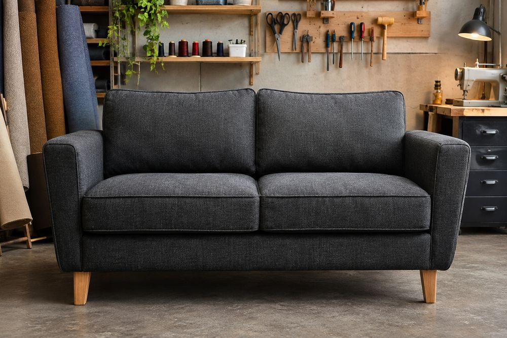

Fotele i kanapy
Siedzisko się zapada, tkanina jest przetarta albo po prostu się opatrzyła. Rozbieramy mebel do ramy i składamy od nowa.
- nowa tkanina, także Twoja własna
- nowa gąbka i ocieplina
- wymiana sprężyn i pasów
- naprawa luźnej ramy
Oferta
Pracujemy na Twoim meblu. Zostawiamy dobrą ramę, wymieniamy to, co się zużyło.

Siedzisko się zapada, tkanina jest przetarta albo po prostu się opatrzyła. Rozbieramy mebel do ramy i składamy od nowa.

Pojedyncze krzesło albo cały komplet do stołu. Przy komplecie wszystkie siedziska wychodzą identyczne.

Fotel po babci, szezlong, sofa z rzeźbioną ramą. Robimy to tradycyjnie: pasy jutowe, sprężyny wiązane ręcznie.